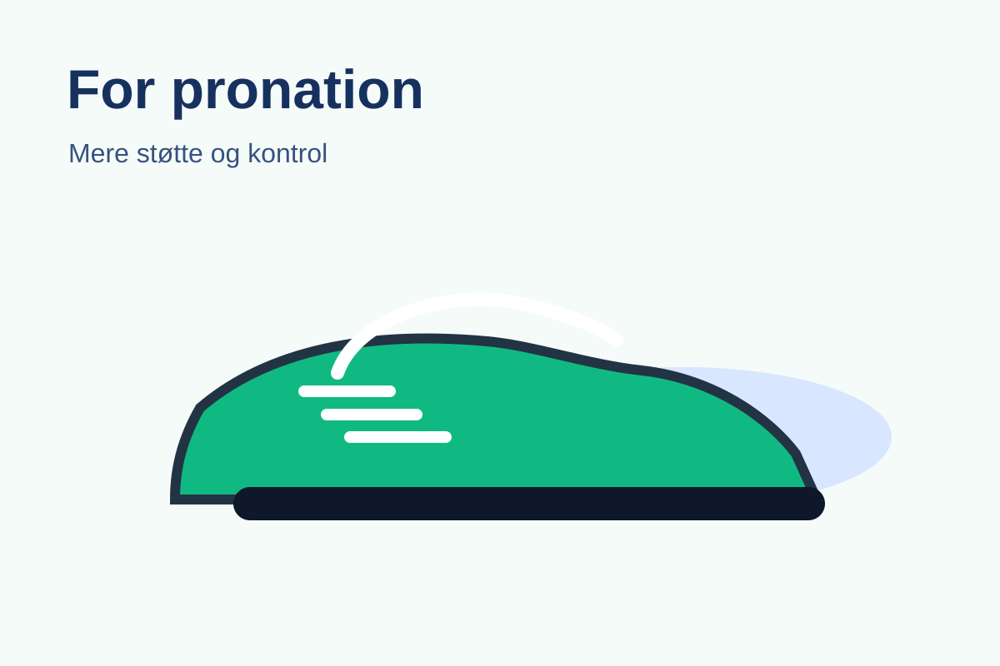
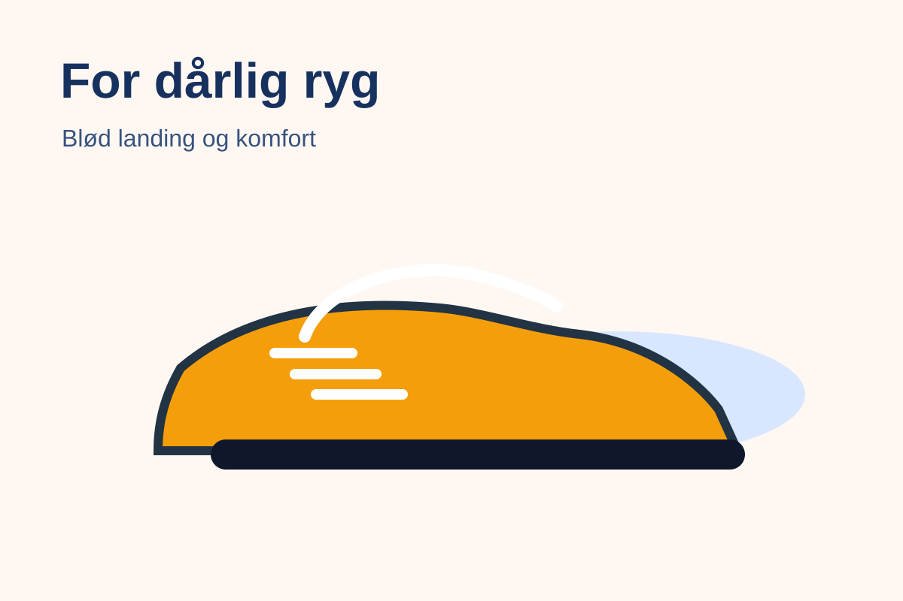
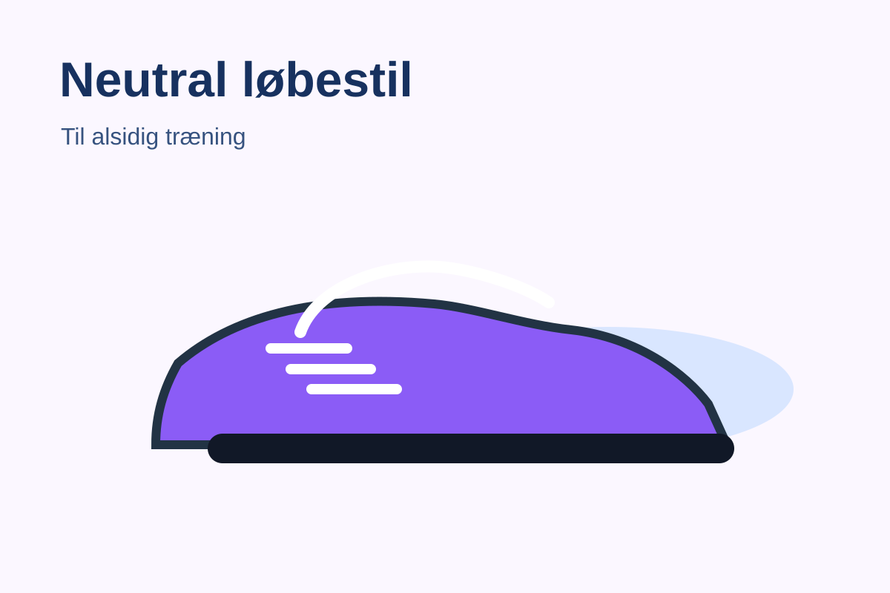
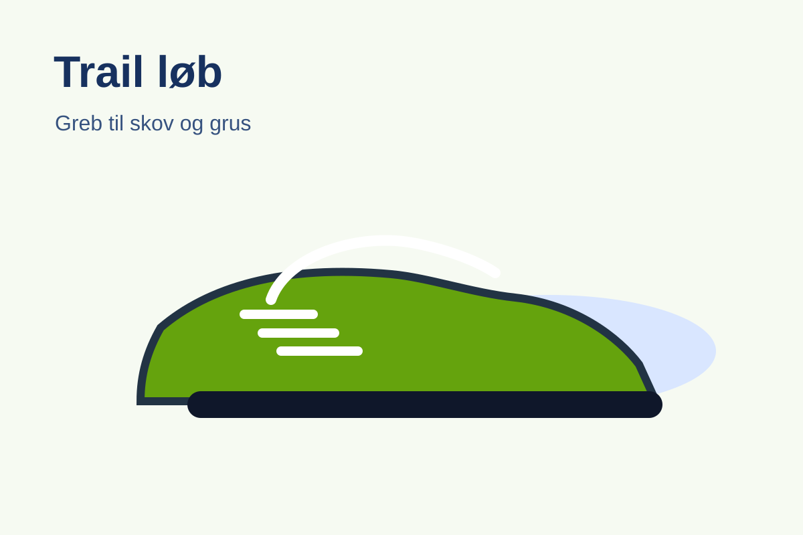

Vælg den kategori der passer bedst til dig
Siden er bygget op med faner/kategorier, så brugeren hurtigt kan finde relevante anbefalinger.




En simpel statisk hjemmeside, der hjælper brugeren med at vælge den rette løbesko ud fra behov, skader og løbestil.
 Tip: Brug siden som udgangspunkt i jeres design, dokumentation og GitHub-proces.
Tip: Brug siden som udgangspunkt i jeres design, dokumentation og GitHub-proces.
Siden er bygget op med faner/kategorier, så brugeren hurtigt kan finde relevante anbefalinger.



